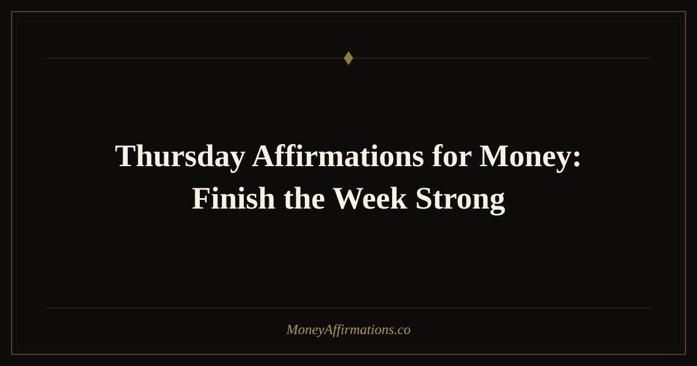

Thursday Affirmations for Money: Finish the Week Strong

Thursday is the turning point of the week. The finish line is close enough to feel, but there is still time to make a meaningful financial choice before the week closes. This is the day when many people begin mentally checking out, postponing money tasks until Monday, or telling themselves it is too late to change the week's direction. But Thursday has a special kind of abundance hidden inside it: the power of finishing well.
Thursday affirmations for money help you gather your energy before Friday arrives. They remind you that a week can still become productive, profitable, peaceful, or more intentional even near the end. One invoice can be sent. One boundary can be set. One unnecessary purchase can be skipped. One brave conversation can be started. One gratitude practice can shift your whole relationship with the money already moving through your life. Thursday is not a waiting room for the weekend. It is a final opportunity to act like the financially empowered person you are becoming.
What are Thursday affirmations for money?
Thursday affirmations for money are present-tense statements designed to help you finish the week with abundance, discipline, and confidence. They are different from Monday affirmations, which often focus on new beginnings, and Tuesday affirmations, which focus on momentum. Thursday affirmations are about completion. They help you gather what the week has taught you and make one or two strong choices before the energy shifts into Friday and the weekend.
This matters because Thursday is a common day for financial postponement. You may think, "I'll deal with that next week," even when the task would take ten minutes. You may be tired enough to spend impulsively or distracted enough to miss an opportunity. Thursday affirmations interrupt that drift. They help you return to financial self-respect, notice what still matters, and act from clarity. Used alongside Tuesday affirmations for money, they create a strong middle-to-end weekly rhythm.
25 Thursday affirmations for money
- This Thursday, I finish the week with financial clarity and confidence.
- I still have time to make powerful money choices before the week ends.
- Money flows to me through completed actions, clear decisions, and aligned effort.
- I release the urge to postpone what my future self needs me to handle today.
- This Thursday, I choose abundance over avoidance.
- I am capable of ending this week stronger than I began it.
- Every wise choice I make today strengthens my financial foundation.
- I welcome profitable conversations, generous opportunities, and helpful ideas today.
- I am focused, grounded, and ready to complete what matters.
- Thursday brings the perfect energy for finishing, refining, and receiving.
- I trust myself to handle money tasks with maturity and calm.
- My work this week continues to create value and income.
- I can rest soon, and I can still choose well today.
- I use today's energy to organize my money and protect my peace.
- I am grateful for every financial blessing this week has already brought.
- Unexpected money, support, and solutions can still arrive this week.
- I am the kind of person who follows through on my financial intentions.
- I choose one strong money move today and let it be enough.
- My financial future benefits from the attention I give it this Thursday.
- I release end-of-week stress and return to abundant self-trust.
- I finish tasks, honor commitments, and create space for more prosperity.
- I am worthy of being paid, supported, respected, and well-resourced.
- This Thursday, I turn effort into evidence of my growing wealth.
- I close open loops with courage and welcome fresh abundance in their place.
- The week is not over, and beautiful financial progress is still available to me.
How to use these affirmations
Use Thursday affirmations as an end-of-week power check-in. Before the day gets away from you, choose five affirmations and say them slowly. Then ask yourself one practical question: What money task would I be relieved to finish before Friday? This question is simple, but it cuts through avoidance. It points you toward the task that is quietly using mental energy in the background.
Your Thursday money task might be sending an invoice, checking whether a bill cleared, reviewing spending from the week, following up with a client, preparing for payday, setting a weekend spending limit, or making a small transfer into savings. It might also be emotional: forgiving yourself for an imperfect week, choosing not to spiral over one mistake, or noticing that you handled something better than you would have handled it a month ago.
After your affirmations, do the task before you negotiate with yourself. Thursday is a day where momentum can disappear into "later" very quickly. The affirmation creates a small window of self-trust. Use that window. If the task is too big, reduce it to the next visible step. Open the document. Write the first sentence. Check one number. Send one message. Financial confidence is often built through these small acts of completion.
Thursday money reset ritual
If you want to make Thursday a recurring part of your money practice, create a ten-minute reset ritual. Start with your affirmations. Then write three quick notes: one financial win from this week, one open loop to close, and one thing you want to carry into the weekend. This gives your mind structure without turning Thursday into a full budget session.
This ritual is especially useful if weekends tend to disrupt your financial intentions. Many people do well Monday through Thursday, then spend from exhaustion or social pressure. A Thursday reset helps you decide ahead of time what kind of weekend you want your money to support. You can choose joy without chaos, generosity without resentment, and rest without abandoning your goals. For more support with ending the week peacefully, pair this practice with Friday affirmations for money.
Best money tasks to finish on Thursday
Thursday is one of the best days to complete financial tasks that become heavier when left open. If you run a business, freelance, or work with clients, use Thursday to send invoices, confirm payment details, follow up on conversations, or prepare next week's money-making priorities. These small completions help you enter Friday with less mental clutter and more confidence.
If your focus is personal finance, Thursday is a useful day for reviewing the week before the weekend changes your routine. Check whether any bills are due, look at what you spent, decide what you can comfortably enjoy over the weekend, and notice whether you need to pause or adjust anything. This is not about restriction. It is about choosing ahead of time, when your mind is clear, instead of letting tiredness make decisions for you later.
How Thursday affirmations protect your weekend energy
Many weekend money decisions are made from emotional overflow. After a long week, spending can become a way to feel free, rewarded, included, or comforted. There is nothing wrong with pleasure, but pleasure feels better when it is chosen consciously. Thursday affirmations help you create that space before the weekend begins.
After saying your affirmations, decide what kind of weekend would actually support your financial peace. Maybe you want one beautiful meal out and a quiet evening at home. Maybe you want to avoid online shopping after 9 p.m. Maybe you want to set aside money for something future-you deeply wants, then enjoy the rest without guilt. This is how abundance becomes mature: not by saying yes to everything, and not by saying no to everything, but by choosing with self-respect.
If Friday is your payday, Thursday is even more important. Decide in advance how you want the incoming money to move. What will be saved? What will be paid? What can be enjoyed? What needs to wait? A few calm decisions on Thursday can prevent the familiar cycle of receiving money and immediately feeling like it disappeared.
Tips to make them work faster
- Use them before your final big task of the week. Affirm your focus before sending the invoice, finishing the project, or making the decision you have been avoiding.
- Close one financial loop. Do not try to fix everything. Choose one open loop and complete it with care.
- Prepare for weekend spending. Decide what you can spend with peace before emotions, social plans, or tiredness make the decision for you.
- Name what worked this week. Thursday is a good day to notice progress before your mind jumps to what is unfinished.
- Connect effort to receiving. Let yourself believe that the value you created this week can return to you in money, support, referrals, or new opportunities.
Frequently Asked Questions
Why use money affirmations on Thursday?
Thursday is powerful because the week is almost over, but not finished. You still have time to make a meaningful financial choice before Friday and the weekend. Affirmations help you use that window intentionally instead of drifting into postponement or stress spending.
Are Thursday affirmations different from Friday affirmations?
Yes. Thursday affirmations are best for completion, focus, and finishing strong. Friday affirmations are more about reflection, gratitude, and entering the weekend with peace. Both are useful, but they support different emotional moments at the end of the week.
What should I do after saying Thursday affirmations?
Choose one practical money action. Send a follow-up, review your budget, set a weekend spending limit, pay a bill, transfer money to savings, or write down one lesson from the week. The affirmation changes your state; the action turns that state into evidence.
Can Thursday affirmations help me avoid weekend overspending?
They can help because they bring awareness before the weekend begins. When you decide in advance how you want to spend, save, and enjoy your money, you are less likely to use shopping, restaurants, or impulse plans as a reaction to end-of-week exhaustion.
For more support in building a steady, abundant financial identity, explore the full money affirmations collection. If your Thursday focus is long-term security, the wealth affirmations collection can help you connect today's choices to the bigger future you are creating.